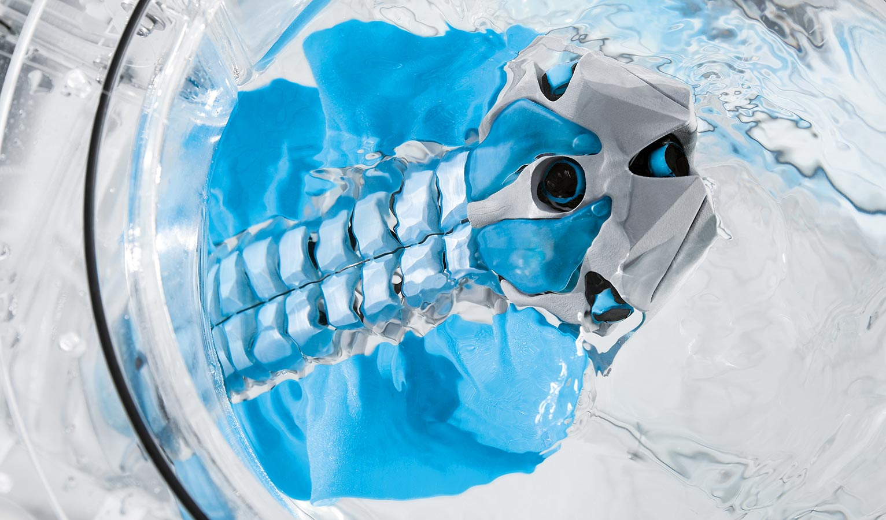
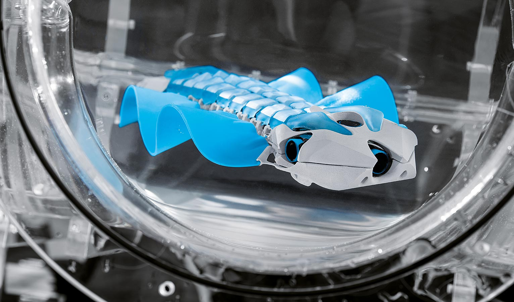
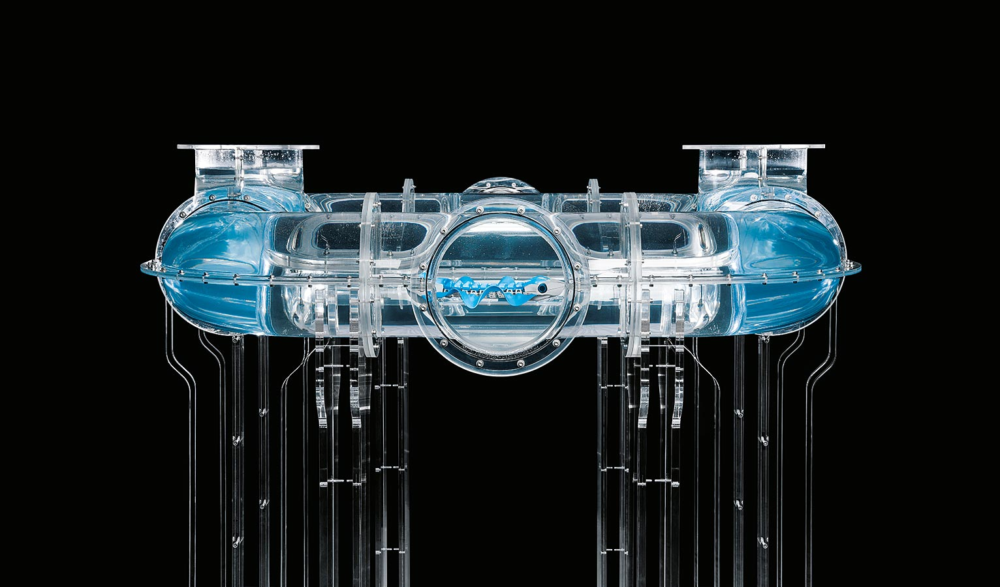
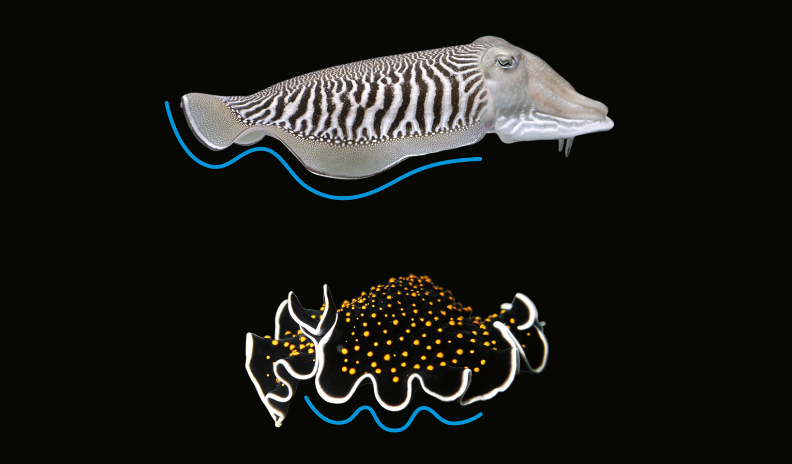

BionicFinWave
具有独特鳍片驱动器的水下机器人
海涡虫、乌贼和裸臀鱼有一个共同点：要进行移动，它们利用自己的纵鳍生成连续波浪，并沿自己的体长推动身体前行。通过这种所谓的鳍片起伏运动，BionicFinWave也可以控制自身运动，
穿过以丙烯酸玻璃制成的管道系统。自主水下机器人可以通过无线电与外界彼此通信，并将数据（如温度和压力传感器测量值）传输到平板电脑。

自然样板的纵鳍从头部延伸到尾部，或位于背部、腹部，或身体两侧。随着鳍片的起伏运动，鱼将水推向身后，由此产生向前的推力。相反，这些生物也可以向后游动，并根据波形提供浮力、
下沉力或侧向推力
灵活的硅胶鳍片确保逼真的游动
BionicFinWave使用其两个侧鳍移动。这些完全由硅胶制成，没有支柱或其他支撑元件。因此，其柔韧度极强，可以真实地再现生物样板的流畅波浪运动。
为此，两个鳍片分别在左右两侧固定在九个小型杠杆臂上。这些由位于水下机器人机体上的两个伺服电机驱动。两个相邻的曲轴将动力传递至杠杆，使两个鳍片能够单独移动。以这种方式，它们可以产
生不同的波形，特别适合于慢速和精确运动，并且相比例如传统的螺旋传动器，所搅拌的水量更少。

比如，要进行游动转弯，外部鳍片的移动速度要快于内部鳍片，与挖掘机的链条同理。BionicFinWave头部的第三个伺服电机控制机体的弯曲，使其能够上下浮动。为了使曲轴具有相应的柔性和灵
活性，每个杆段之间都设有万向接头。为此，包括接头和曲柄连杆在内的曲轴以塑料打造而成，采用一体成型3D打印工艺。

各种组件的智能交互
BionicFinWave的其余主体元素同样以3D打印制作。其空腔可用作浮子。同时，整个控制和调节技术具有防水功能，并且可在极小的空间内获得可靠地安装和协调。因此，在机身前部与带有处理
器和无线电模块的电路板的相邻位置还装配有一个压力传感器和超声波传感器。这些持续测量到墙壁的距离以及水中的深度位置，从而避免与管道系统发生碰撞。

流程工业的新动力和新思路
借助仿生技术载体，我们的仿生学习网络再次为与自动机器人的未来协作以及在液体介质应用中的全新驱动技术提供动力。我们可以设想，针对检测、系列测量或数据采集等任务持续开发
BionicFinWave等概念，例如用于水和废水技术或流程工业的其他领域。此外，在项目中获得的认识可用于柔性机器人部件的生产工艺。